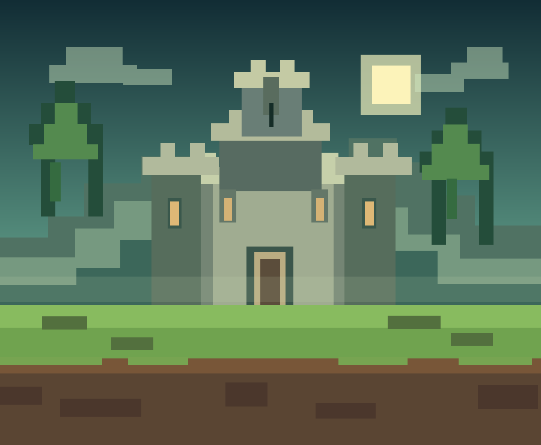

STONELAND II / НОВИЙ СВІТ
Твоя історія.
Твій світ.
Будуй міста, досліджуй світ та знаходь друзів. StoneLand II — місце, де кожен блок стає частиною великої історії.
СВІТ ВІДКРИТИЙ ДЛЯ НОВИХ ІСТОРІЙ

STONELANDWORLD II / PIXEL EDITION